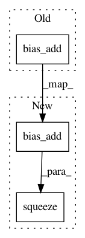

900e03a46c6a3aeaf6aa1c058f53979134061549,snorkel/learning/logistic_regression.py,LogisticRegression,_build,#LogisticRegression#,31
Before Change
s1, s2 = self.seed, (self.seed + 1 if self.seed is not None else None)
self.w = tf.Variable(tf.random_normal((self.d,), stddev=SD, seed=s1))
self.b = tf.Variable(tf.random_normal((1,), stddev=SD, seed=s2))
h = tf.nn.bias_add(tf.matmul(self.X, self.w), self.b)
// Noise-aware loss
self.loss = tf.reduce_sum(
tf.nn.sigmoid_cross_entropy_with_logits(logits=h, labels=self.Y)
)
After Change
s1, s2 = self.seed, (self.seed + 1 if self.seed is not None else None)
self.w = tf.Variable(tf.random_normal((self.d, 1), stddev=SD, seed=s1))
self.b = tf.Variable(tf.random_normal((1,), stddev=SD, seed=s2))
h = tf.squeeze(tf.nn.bias_add(tf.matmul(self.X, self.w), self.b))
// Noise-aware loss
self.loss = tf.reduce_sum(
tf.nn.sigmoid_cross_entropy_with_logits(logits=h, labels=self.Y)
)
In pattern: SUPERPATTERN
Frequency: 3
Non-data size: 3
Instances
Project Name: snorkel-team/snorkel
Commit Name: 900e03a46c6a3aeaf6aa1c058f53979134061549
Time: 2017-04-17
Author: henry.ehrenberg@outlook.com
File Name: snorkel/learning/logistic_regression.py
Class Name: LogisticRegression
Method Name: _build
Project Name: NVIDIA/OpenSeq2Seq
Commit Name: c330cc618b76a04c0f861102cfad2c73f1bc1c9a
Time: 2018-07-24
Author: vnoroozi@nvidia.com
File Name: open_seq2seq/parts/convs2s/conv_wn_layer.py
Class Name: Conv1DNetworkNormalized
Method Name: call
Project Name: snorkel-team/snorkel
Commit Name: 900e03a46c6a3aeaf6aa1c058f53979134061549
Time: 2017-04-17
Author: henry.ehrenberg@outlook.com
File Name: snorkel/learning/logistic_regression.py
Class Name: SparseLogisticRegression
Method Name: _build